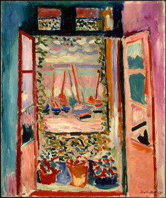
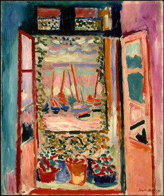

Pictura la începutul secolului al XX-lea
Pictura în secolul XX începe prin moștenirea stilului marilor pictori ai finalului secolului al XIX-lea, cum ar fi Vincent van Gogh, Paul Cézanne, Paul Gauguin, Georges Seurat, Henri de Toulouse-Lautrec, dar și alții care au fost esențiali pentru dezvoltarea artei moderne.
La începutul secolului al XX-lea, Henri Matisse împreună cu alți tineri artiști au revoluționat arta Pariziană cu figuri și peisaje nebunatice, multicolorate și foarte expresive, numite Fauvism de către critici.
Fauvismul a fost stilul de pictură al „les Fauves” (bestiile sălbatice), adică un grup de pictori care puneau în pictură accentul pe calități picturale și culori puternice în defavoarea valorilor reprezentaționale sau realistice ale Impresionismului.
Fauvismul ca mișcare a durat doar câțiva ani, între 1905 și 1908, a susținut trei expoziții, și i-a avut ca lideri pe Henri Matisse și pe André Derain.
 


Cubismul a fost o mișcare artistică avangardistă care a revoluționat pictura și sculptura Europeană. Cubismul a fost considerat chiar cea mai influențială mișcare artistică din secolul al 20-lea. În arta cubistă, obiectele sunt analizate, împărțite în bucăți si reasamblate într-o formă abstractă - obiectele sunt observate nu dintr-un singur punct de vedere, ci dintr-o multitudine, ceea ce prezintă subiectul într-un context mai vast.
Pionierii cubismului au fost Pablo Picasso și Georges Braque, cărora li s-au alăturat Jean Metzinger, Albert Gleizes, Robert Delaunay, Henri Le Fauconnier și Fernand Léger.
Oamenii de istorie au împărțit cubismul în 3 etape, anume proto-cubismul, cubismul timpuriu și cubismul de cristal.
Proto-cubismul (1907-1908)
Pictura lui Pablo Picasso, din 1907, Les Demoiselles d'Avignon este numită deseori o operă proto-cubistă.
În 1908, în descrierea expoziției lui Georges Braque în galeria lui Kahnweiler, criticul Louis Vauxcelles îl numește pe Braque un om curajos care urăște forma „reducând totul, locurile și figurile și casele în scheme geometrice, în cuburi”.
Până în 1911, Picasso a fost recunoscut ca inventatorul cubismului, iar importanta lui Braque a fost discutată mai târziu, având în vedere felul lui de a trata spațiul, volumul și masa în peisajele „L'Estaque”. Dar istoricul Christopher Green spune „acest mod de a vedea Cubismul este asociat cu o definiție extrem de restrictivă a artiștilor numiți cubiști - o definiție care marginalizează contribuția artiștilor care și-au expus operele la Salon des Indépendants în 1911.”
Cubismul Timpuriu (1909-1914)
Caracteristică pentru această fază este înclinația artistului de a descompune obiectul reprezentat într-o mulțime de suprafețe mici, geometrizate.
Gama cromatică devine neobișnuit de sumară, bazându-se în principal pe tonuri de cafeniu și cenușiu, iar artiștii realizează faptul că deformarea din ce în ce mai puternică și atracția pentru monocromie poate duce în cele din urmă la abstract. Pentru a evita acest lucru și pentru a recrea trimiterea concretă la realitate, ei vor propune noi tehnici artistice.
Braque introduce în tablourile sale litere tipărite, se servește de un șablon în pictură, folosește pieptenele pentru obținerea facturilor vălurite și recurge la imitații de tapet, lambriuri și marmură. Tot el va realiza apoi construcții din hârtie, va lipi pe desen fâșii de hârtie decupate dintr-o bandă care imită lemnul, realizând astfel primul său colaj (collage).
Cubismul de Cristal (1914-1918)
Odată cu adoptarea tehnicii colajelor, pe care și Picasso va începe să o folosească, artiștii intră în ultima fază a cubismului.
Noua tehnică readuce culoarea în operele cubiștilor, permițând totodată restabilirea contactului cu realitatea grație asocierii unor motive care pot fi imediat recunoscute. Compozițiile acesteu perioade sunt total eliberate de ceea ce mai rămăsese încă din iluzia planului profund din lucrările cubismului timpuriu - ceea ce este prezentat va apărea de acum încolo exclusiv în forme plate. Obiectele sunt din nou unificate, dar nu sunt totuși forme copiate după natură, ci semne simplificate care trebuiau să dezvăluie cele mai esențiale trăsături ale lor, sinteza obiectelor prezentate.
Sticla, de pildă, este sugerată cu ajutorul unor tăieturi verticale și orizontale, prima indicând forma profilului ei, cea de a doua, volumul. În timpul acestei perioade, pictorul Juan Gris, care s-a alăturat târziu cubismului, devine al treilea participant la acest dialog.
Braque își expune lucrările pentru ultima oară la "Salonul Artiștilor Independenți" în Anul 1909. Picasso refuzase cu mai mult timp în urmă să mai participe la expozițiile Salonului. Numai cei care frecventează atelierele celor doi artiști și cei care participă la expozițiile organizate la Galeria Kahnweiler au ocazia să cunoască lucrările lor, dar cei doi nu se pot plânge de lipsa adepților. Astfel, începând din 1911, artiștii care se pronunță de partea cubismului își expun lucrările într-o sală a "Salonului Artiștilor Independenți" și apoi la "Salonul de toamnă".
În 1912, se organizează o expoziție strict cubistă intitulată "Section d'Or" la galeria "La Boetie", din inițiativa lui Marcel Duchamp.
Expresionismul abstract este o mișcare artistică postbelică în pictura Americană, dezvoltată în New York în anii 1940. A fost prima mișcare specific americană care a dobândit influență internațională și a pus New Yorkul în centrul artei vestice, un rol ocupat până în acel moment de Paris.
Această mișcare a constat în reprezentarea gândurilor și sentimentelor în actul picturii într-o manieră spontană, folosind tratamentul expresiv al materiei, formele abstracte și culorile cele mai variate. Dintre tipurile de pictură abstract-expresionistă se disting două:
- action painting - în creațiile gestuale contează înregistrarea tensiunii spirituale și fizice a autorului în momentul pictării. Un exemplu este Jackson Pollock, care renunță la șevalet, așează pânza pe podea și lasă să se scurgă culorile direct din diferite recipiente sau de pe pensulă. Tehnica sa, numită "dripping", este adaptată intenție de a picta nu ceea ce vede, ci ceea ce simte pictorul. Astfel se creează abstracții extrem de expresive în pictură.
- color field painting sau abstracția cromatică. Termenul a fost folosit de Clement Greenberg pentru a caracteriza pictura unor artiști ca Mark Rothko, Clyfford Still și Barnett Newman, artiști care accentuau unificarea culorii cu forma. Reprezentanții acestui stil practică o pictură din câmpuri ample de culoare, dispuse în tente plate, active în același plan, în care uneori își fac apariția principii raționaliste ordonatoare.
Cu timpul, direcția expresionismului abstract începe să-și piardă elanul inițial, iar unii dintre creatorii săi par să fie din ce în ce mai dezamăgiți de aceasta. Astfel, se pregătește terenul pentru apariția unei noi forme de expresie în artă, care va primi numele de "Pop art". Cuvântul "pop" apare de la prescurtarea expresiei englezești "popular art", în sensul de artă cu mare popularitate la public, ca fiind inițial opusă "artei academice".
Cea mai notabilă personalitate a Pop Art-ului este Andy Warhol care, în 1960 inițiază seria „Sticlele de Coca-Cola” și „Cutiile de conserve”, reprezentări ale obiectelor de uz casnic, produse industriale sau motive de reclamă. Ulterior el inserează în pictura sa fragmente de benzi desenate, cu structuri rezistente sau elastice. El reproduce, de asemenea, obiecte în dimensiunile lor adevărate. Andy Warhol aplică tehnica seriografiei, care permite multiplicare repetată a motivului.

Concluzie
Pictura și mișcările artistice sunt într-o continuă evoluție, încă de la începuturile omenirii, populația și pasionații de artă sunt impresionați de diferite modalități de exprimare a sentimentelor și emoțiilor prin pictură, dar și prin alte procedee artistice.
Este foarte greu de prezis care vor fi următoarele mișcări artistice populare, dar cert e că acestea vor impresiona și uimi omenirea.